Le 4ème jour, nous repartons en direction de Leiria pour visiter le monastère de Batalha à quelques kilomètres au sud de cette ville. Ce merveilleux monument gothique commémore la victoire de Jean Ier sur les Castillans en 1385, lors de la bataille d'Aljubarrota, à 15 kilomètres de là. Le souverain avait fait le vœu d'élever la plus belle des églises à la Vierge, s'il remportait cette bataille et c'est ainsi que fut fondé le monastère de Sainte Marie de la Victoire, un monument aujourd'hui classé par l'Unesco au patrimoine mondial.
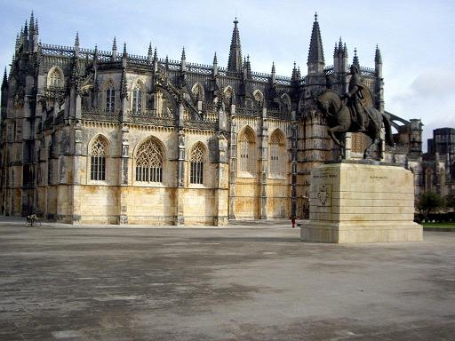
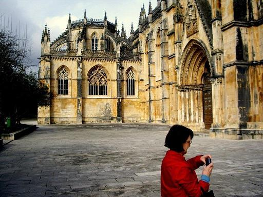
Le monastère de Batalha; Au premier plan: statue d'Alvares Pereira - La Chapelle du Fondateur
La construction de cet édifice qui marie gothique tardif et décor manuélin dura près d'un siècle et demi, de 1388 à 1533, au cours du règne de sept rois et cette période coïncide avec le début de l'aventure maritime portugaise. La statue équestre qui occupe le centre de l'esplanade est celle du connétable Nuno Alvares Pereira qui commandait les troupes portugaises à Aljubarrota.
La façade de calcaire du monastère est l'œuvre d'un étranger, Huguet qui succéda au Portugais Afonso Domingues décédé en 1402.
Plan interactif du monastère Sainte Marie de la Victoire
(Dans l'original, survoler le plan révélait les photos des différentes zones)
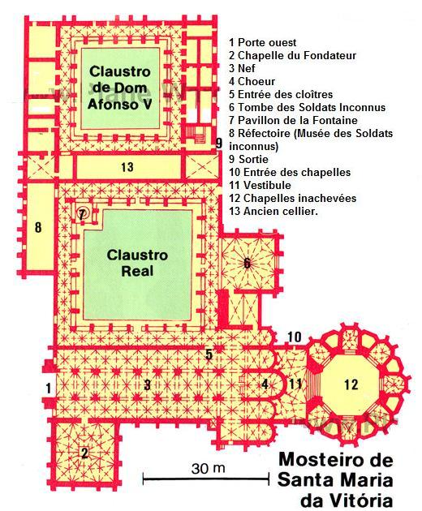

Plan du monastère Sainte Marie de la Victoire
C'est Mateus Fernandes l'Ancien, maître de l'art manuélin, qui réalisa la superbe entrée des Chapelles inachevées et l'essentiel de la décoration du Cloître royal (Claustro Real).
L'intérieur de l'église n'est décoré que de vitraux illustrant la vie du Christ.
À droite, la chapelle du Fondateur que l'on doit à Huguet abrite le tombeau de Jean Ier et son épouse, Philippa de Lancastre, dont les gisants sont surmontés de dais ciselés. Les tombeaux des infants, dont celui d'Henri le Navigateur, sont abrités dans les enfeus du pourtour.
Le magnifique Cloître royal présente une décoration manuéline greffée sur une structure gothique.
Il est bordé d'un côté par la salle capitulaire dont la voûte n'est constituée que par une seule étoile de nervures se rejoignant en un centre constitué par les armoiries de Jean Ier. C'est ici que sont enterrés les deux soldats inconnus du Portugal (un mort en 14-18, l'autre durant la campagne d'Afrique). À l'opposé l'ancien réfectoire abrite des monuments en l'honneur desdits soldats inconnus.
Le premier site que nous visitons est le plus éblouissant: les chapelles Inachevées (capelas Imperfeitas), accessibles de l'extérieur. Commandées par le roi Duarte Ier (1391 - 1438), conçues par Huguet et complétées par Mateus Fernandes, elles devaient à l'origine recevoir les tombes du souverain et de ses descendants. En fait, n'y reposent que le souverain et son épouse. Ce monument, unique en son genre est éblouissant, en particulier le portail, véritable dentelle de pierre et les piliers, finement ouvragés, le tout exposé aux intempéries!
Alcobaça
Vingt kilomètres plus au sud, l'abbaye cistercienne d'Alcobaça, construite en 1153 et classée au patrimoine mondial depuis 1985, est une étape obligée de tout circuit au Portugal. C'est ici que sont enterrés, côte à côte, les amants maudits de la pièce de Montherlant, Inès de Castro et Pierre, le fils du roi Alfonse IV, le beau-père assassin. Pourtant, nous ne visiterons pas ce chef d'œuvre. Les portugais nous ont emprunté non seulement le mot "grève", mais aussi la pratique de cette institution. À titre de dédommagement, nous visiterons le Panthéon de Lisbonne.
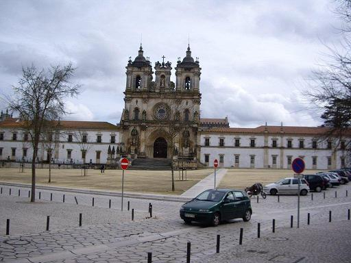
Monastère Sainte Marie d'Alcobaça
Nazaré
Poursuivant notre route vers l'ouest, nous arrivons, pour prendre un "déjeuner de poissons en bord de sable" (inclus dans le forfait), à la station balnéaire de Nazaré. La longue plage est dominée par une falaise abrupte dénommée "le Site" auquel conduit un ascenseur.
Les pêcheurs ramènent leurs prises et les font sécher au soleil comme par le passé. Leurs maisonnettes, converties en bars, sont cernées par les immeubles résidentiels modernes.
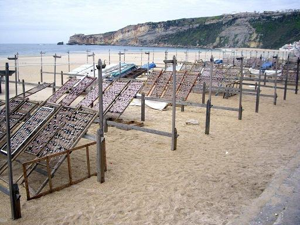
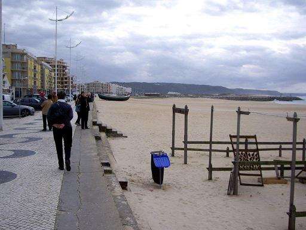
Nazaré: la plage et le séchage du poisson
Les femmes de pêcheurs de Nazaré s'habillaient de noir avec sept jupons de couleur superposés, ainsi qu'un foulard bariolé. Malgré l'absence d'autres touristes que nous-mêmes, nous rencontrons plusieurs dames âgées portant ce costume traditionnel.
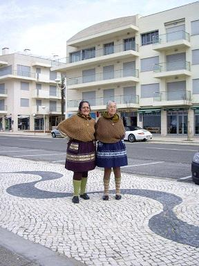

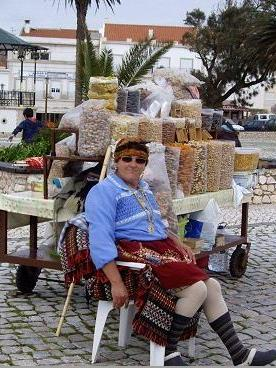
Nazaré: femmes en costume traditionnel
Dora nous conduit en minibus en haut de la falaise du Site, d'où on a une vue magnifique sur la plage et la ville.
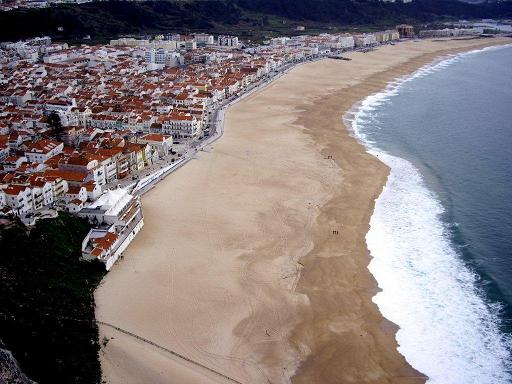
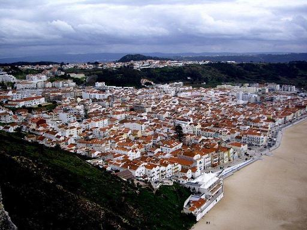
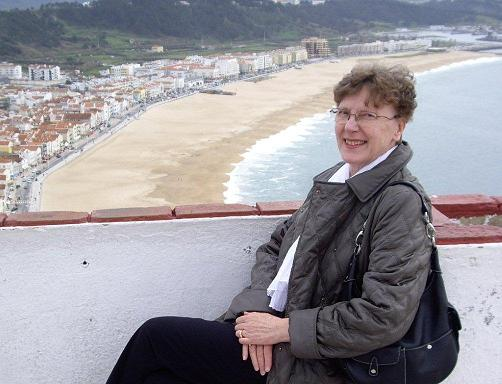
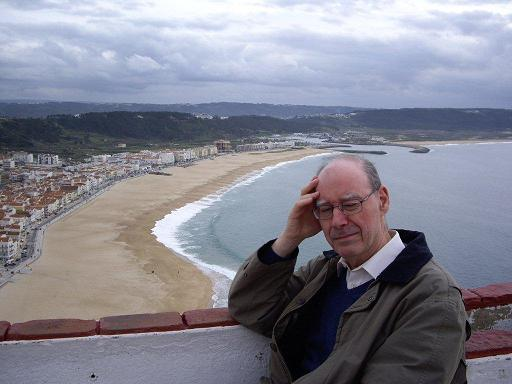
Nazaré: la plage et la ville vues du 'Site'
Tout près s'élève l'église de Notre-Dame de Nazareth (Nazaré). Il s'agit d'une statue de la Vierge, rapportée de ce lieu par un moine au VIème siècle, disparue, puis redécouverte au XVIIIème siècle. Un pèlerinage a lieu ici tous les ans, le 4 septembre, prélude à la fête de la ville.
Une fresque dans l'église évoque le miracle qui sauva la vie au seigneur Fuas Roupinho en 1182: une prière qu'il fit à la Vierge fit reculer son cheval sur le point de se jeter du haut de la falaise.
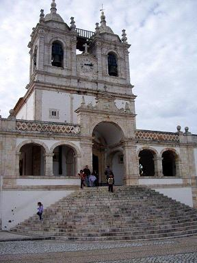
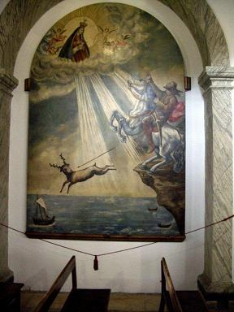
Le Site: l'église et le miracle de Fuas Roupinho
Nous remontons dans le minibus pour nous rendre à une quarantaine de kilomètres plus au sud, au village médiéval d'Óbidos.